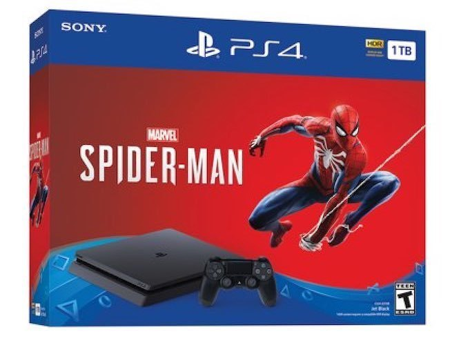
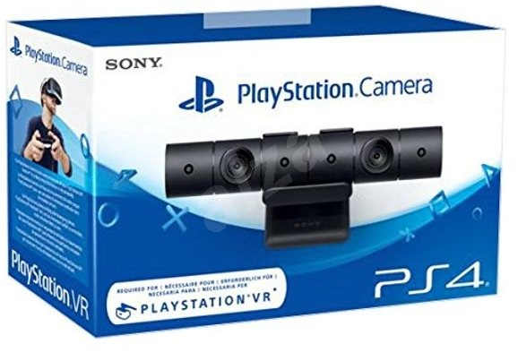
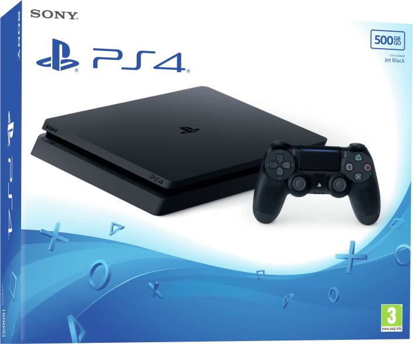

Entretenimiento
PlayStation 4
PlayStation 4 (プレイステーション4 Pureisutēshon Fō?, oficialmente abreviada como PS4) es la cuarta videoconsola del modelo PlayStation.8 Forma parte de las videoconsolas de octava generación. Fue anunciada oficialmente el 20 de febrero de 2013 en el evento PlayStation Meeting 2013,9 aunque el diseño de la consola no fue presentado hasta el 10 de junio en el E3 2013.10 Es la sucesora de la PlayStation 3 y compite con Wii U y Switch de Nintendo y Xbox One de Microsoft. Su lanzamiento fue el 15 de noviembre de 2013 en Estados Unidos y en Europa y Sudamérica fue el 29 de noviembre de 2013,119 mientras que en Japón fue el 22 de febrero de 2014

Alejándose de la compleja arquitectura utilizada en el procesador Cell de la videoconsola PlayStation 3, la PlayStation 4 cuenta con un procesador AMD de 8 núcleos bajo la arquitectura x86-64. Estas instrucciones x86-64 están diseñados para hacer más fácil el desarrollo de videojuegos en la consola de nueva generación, que atrae a un mayor número de desarrolladores. Estos cambios ponen de manifiesto el esfuerzo de Sony para mejorar las lecciones aprendidas durante el desarrollo, la producción y el lanzamiento de la PS3

Entre las nuevas aplicaciones y servicios, Sony lanzó la aplicación PlayStation App, permitiendo a los que tengan una PS4 convertir los teléfonos inteligentes y las tabletas en una segunda pantalla para mejorar la jugabilidad o en teclados externos para más comodidad en el momento de escribir. La compañía también planeaba debutar con Gaikai, un servicio de juego basado en la nube que aloja contenidos y juegos descargables. Mediante la incorporación del botón "Share" en el nuevo controlador hace que sea posible compartir en cualquier momento capturas de pantalla, trofeos, compras o videos en páginas como Facebook, Twitter y hacer stream de lo que se juegue y ver el de otros amigos en directo desde Ustream o Twitch, Sony planeó colocar más énfasis en el juego social
